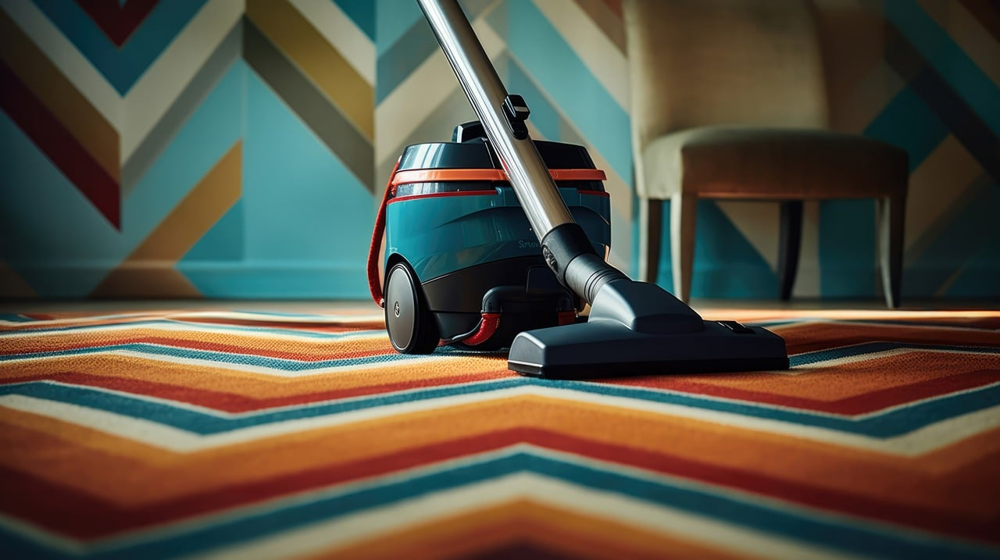

Regular House Cleaning
Our Home Cleaning service goes beyond mere tidying; it’s a commitment to elevating your living environment. From routine maintenance to deep cleaning, we tailor our services to suit your needs, promising a home that not only looks impeccable but also promotes a sense of well-being. Of course, we will do everything based on prior consultation, so we clean your home individually.